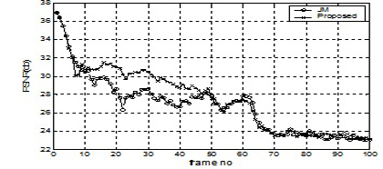
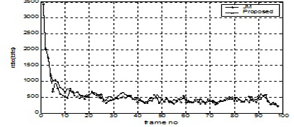
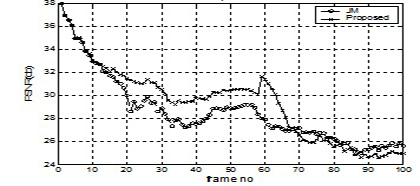
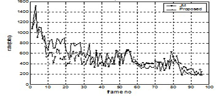
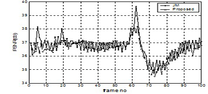
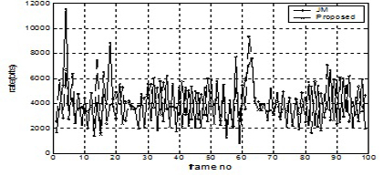
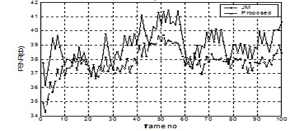
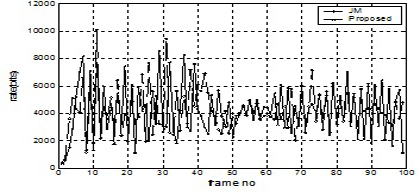
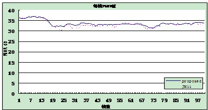

基于运动检测的H.264码率控制改进算法
改进算法的效率：视频序列（QCIF）客观质量PSNR在高码率（目标码率：128Kbps）和低码率（目标码率：24Kbps）的情况下，无论运动剧烈或场景切换时均取得较好的质量，平均比JVT-G012提高了0.07db到0.78db。
-
Foreman序列实验结果:

逐帧PSNR值

逐帧码率
Carphone序列实验结果:

逐帧PSNR值

逐帧码率
-
基于查表的非零系数码率控制算法
Foreman序列实验结果:

逐帧PSNR值

逐帧码率
Carphone序列实验结果:

逐帧PSNR值

逐帧码率
-
基于感兴趣区域的H.264码率控制改进算法
通过对ROI区域的精确判定，对该区域进行了比特增强。同时在帧级进行了码率分配并通过基本单元层的码率分配对每个宏块进行QP的调整。仿真结果显示：采用这种算法可以使编码质量有所提高，同时改善了视频序列的主观质量。
proposed (db) JM11(db) 增益（db） 32kbps30.4930.55－0.0648kbps32.6832.620.0656kbps33.4933.360.1364kbps33.8934.140.25Forman序列在各个比特下PSNR值与JM12比较 QP 28

silent 56kbps 第47帧主观质量比较图(左JM12，右proposed)
H.264码率控制跳帧算法
在带宽有限的条件下，该算法考虑了缓冲区的占用率，将运动复杂度作为跳帧依据。为重要的P帧进行有权重的比特分配，保护了运动剧烈的帧。在低速码率下这种算法可以大大降低跳帧的数目，提高平均PSNR值，减少PSNR值的波动，提高图象质量。
平均PSNR 编码时间 跳帧数目 本文算法24.83160.151sec4JM24.72206.990 sec8＋0.11db－64.849sec4两种算法的比较（Foreman QCIF实际码率34kbps@30fps,初始QP 28）
平均PSNR 编码时间 跳帧数目 本文算法22．23126.771 sec0JM21．80193.217 sec7＋0.43db－65.893 sec-7两种算法的比较（Mobile QCIF 实际码率 80kbps@30fps ,初始QP 28）
Mobile序列每帧比特数